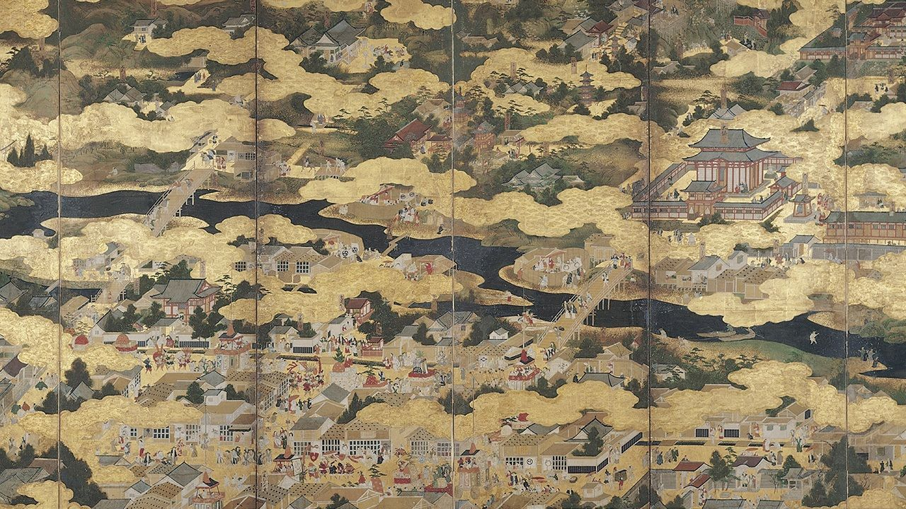
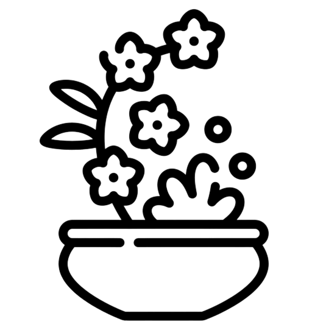
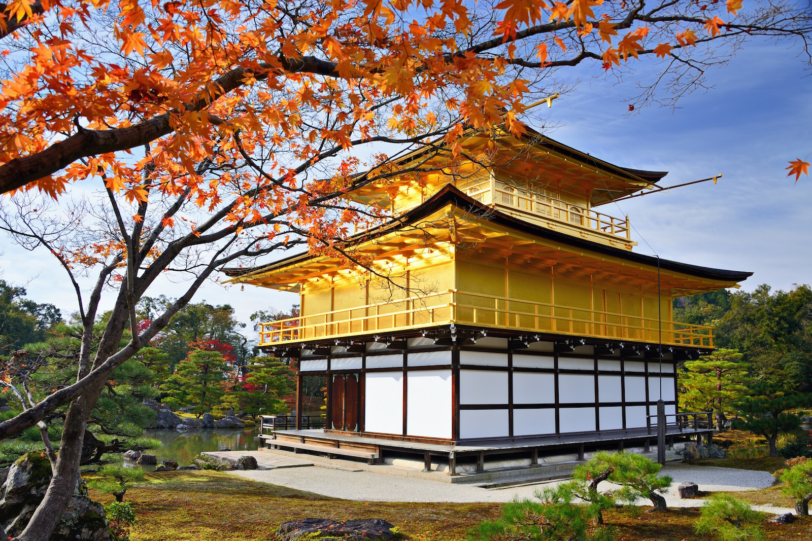
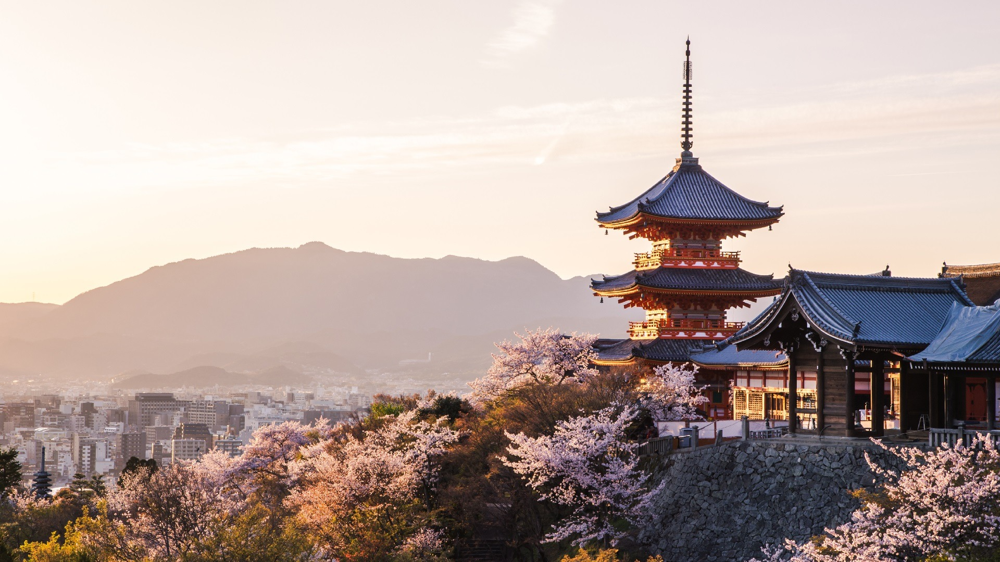
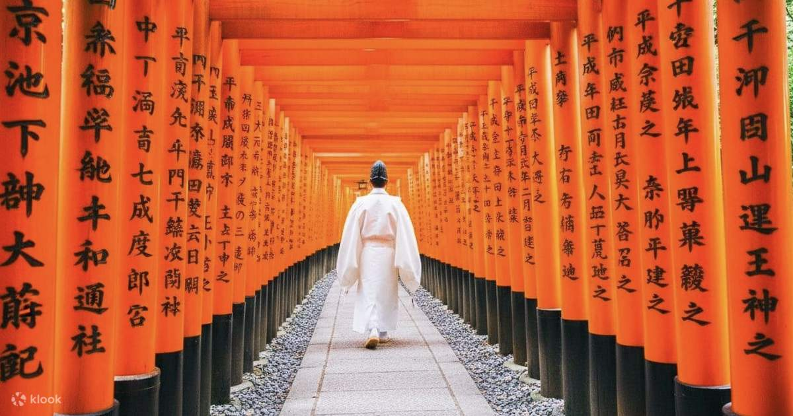

Tea Ceremony (サドウ )
More than just drinking tea, it is a comprehensive art form that combines philosophy, aesthetics, and etiquette. Experience the spirit of "ichi-go ichi-e" (one time, one meeting) in a traditional Kyoto tea house.
A living history museum, feel the tranquility and charm of the thousand-year-old capital.
In 794, Emperor Kanmu established Kyoto as the capital of Japan, naming it "Heian-kyō," which means "Capital of Peace and Tranquility." For over a thousand years, until the capital was moved to Tokyo in 1868, Kyoto remained the political, economic, and cultural heart of Japan. This long history has endowed the city with countless precious historical buildings and intangible cultural assets. Strolling through the streets of Kyoto, one can almost hear the echoes of history and feel the prosperity and elegance of the Heian period.

More than just drinking tea, it is a comprehensive art form that combines philosophy, aesthetics, and etiquette. Experience the spirit of "ichi-go ichi-e" (one time, one meeting) in a traditional Kyoto tea house.

The "Way of Flowers" is the art of arranging flowers and plants to create a composition embodying vitality and harmony. It emphasizes lines, space, and simplicity.
Renting a beautiful kimono or yukata to stroll along the stone-paved streets of Gion (ギオン) is one of the most popular ways to experience the atmosphere of Kyoto.

Officially named Rokuon-ji, this Zen temple, covered in gold leaf, shines brilliantly in the sunlight and is one of Kyoto's most iconic symbols.

The famous "Kiyomizu Stage" is supported by 139 massive wooden pillars without a single nail. It offers a spectacular panoramic view of Kyoto city.

World-famous for its thousands of vibrant red "Senbon Torii" gates. Walking up the mountain path through the torii tunnels is a mystical and spiritual experience.